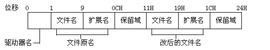

这一节我们要讨论有关FCB的一些较为特殊的应用，主要是三个方面的内容：一是应用FCB删除文件和给文件改名；其二是利用扩展FCB访问具有特殊属性的文件。第三是有关"命令行参数"的问题。我们先来讨论第一个问题--删除与改名。
功能号： 13H
用 途： 删除文件
参 数： DS:DX--指向未打开的FCB
调 用： INT 21H
返 回： AL = 0--文件正确删除
AL = 0FFH--文件未能删除
功能号： 17H
用 途： 文件改名
参 数： DS:DX--指向特殊的FCB
调 用： INT 21H
返 回： AL = 0--文件正确改名
AL = 0FFH--文件未能改名
这两个功能在应用时应注意这样几点：首先要注意它们所使用的FCB的性质，13H功能要求使用一个未打开的FCB，17H功能使用一个特殊的FCB。下面我们就来看看特殊的FCB是一种什么结构，请看图7-4：

可以看到和标准的FCB相比这个新的FCB主要是对偏移11H后作了改进，很显然，既然要改名，总要给出一个新的文件名才行，这个新文件名就填在FCB偏移11H处。第二我们要讨论一下究竟什么文件可以删除。我们平常使用DOS时都知道只读文件或隐含文件是不能删除的，那么使用13H功能删除文件时也要遵守这个规矩。同样，若不使用扩展FCB，那么卷标、子目录也不能用此功能删除，这个功能唯一能删除的就是那些普通的文件。第三，我们平常使用DOS时都知道DEL命令可以一次删除一批文件，也就是使用"*"或"?"，我们习惯上称这两个符号为通配符。13H功能同样支持通配符，也就是说你在FCB中填入的文件名可以是"*.*"或"FILE.???"这样的字符串。当然，使用通配符是有条件的，并非所有的DOS版本都支持通配符，2.1版仅支持"."，3.0以上版才支持"*"。考虑到现在所使用的DOS版本都在3.3以上，所以大家可以不必判断DOS版本而放心使用通配符。
下面这两个程序演示了这两个功能的使用方法，对于我们平时编制程序来讲，这两个功能其实并不常用，所以大家对它们的用法有些印象也就可以了，不必深究。
DATA SEGMENT
ASSUME DS:DATA
FCB1 LABEL BYTE
DRIVE1 DB 0 ；驱动器号，0：当前 1：A 2：B ...
OLD_NAME DB 'CONFIG ' ；文件原名
OLD_EXT DB 'SYS' ；原扩展名
DB 5 DUP(0)
NEW_NAME DB 'ABCDEFGH' ；新文件名
NEW_EXT DB 'LCS' ；新扩展名
MSG DB 'OK!!!',0DH,0AH,24H
DATA ENDS
CODE SEGMENT
ASSUME CS:CODE
MAIN PROC FAR
MOV AX,DATA
MOV DS,AX
MOV AH,17H ；选择DOS的17H功能
MOV DX,OFFSET FCB1 ；DX指向特殊的FCB
INT 21H ；将文件改名
OR AL,AL ；文件已经改变名字了吗？
JNZ ERR_EXIT ；未能找到指定的文件，转ERR_EXIT
MOV AH,9 ；显示"OK！！！"
MOV DX,OFFSET MSG
INT 21H
ERR_EXIT:
MOV AH,4CH ；结束进程
INT 21H
MAIN ENDP
CODE ENDS
END MAIN
DELFILE.ASM
DATA SEGMENT
ASSUME DS:DATA
FCB2 LABEL BYTE
DRIVE2 DB 0 ；驱动器号，0：当前 1：A 2：B ...
FILE_NAME DB '* ' ；文件名
EXT_NAME DB 'BAK' ；扩展名
CUR_BLOCK2 DW ? ；当前记录块号
REC_SIZE2 DW ? ；记录长度
FILE_SIZE2 DW 2 DUP(?) ；文件长度，由系统填入
CREA_DATE2 DW ? ；建立或最后修改的日期，由系统填入
POSITION2 DB 10 DUP(?) ；保留空间，由系统填入
CUR_REC2 DB ? ；当前记录号
REL_REC2 DW 2 DUP(?) ；相对记录号
MSG DB 'OK!!!',0DH,0AH,24H
DATA ENDS
CODE SEGMENT
ASSUME CS:CODE
MAIN PROC FAR
MOV AX,DATA ；初始化DS寄存器
MOV DS,AX
MOV AH,13H ；选择DOS的13H功能
MOV DX,OFFSET FCB2 ；DX指向未打开的FCB
INT 21H ；删除指定的文件
OR AL,AL ；文件删除了吗？
JNZ ERR_EXIT ；未能找到指定的文件，转ERR_EXIT
MOV AH,9 ；显示"OK！！！"
MOV DX,OFFSET MSG
INT 21H
ERR_EXIT:
MOV AH,4CH ；结束进程
INT 21H
MAIN ENDP
CODE ENDS
END MAIN
我们要讨论的第二个问题是个比较重要的内容，尽管这部分内容也不常用，但它是FCB文件功能与文件句柄功能的一个最显著的区别。我们知道存在于磁盘上的内容不仅是文件，还有子目录和卷标。即使是文件也有只读、隐含等很多种不同的属性。如何处理这些具有属性的文件，这就要用到扩展的FCB。我们前面讨论过有关文件属性的问题，DOS实际上是用一个字节表示文件属性，这个字节存放在扩展FCB的最后，也就是紧挨着驱动器号前面的那个字节。有关这方面的知识请大家复习一下本章的第二节。我准备通过一个实际程序来说明这个问题，请看例程LABEL.ASM
DATA SEGMENT
ASSUME DS:DATA
EXT_FCB LABEL BYTE
DB 0FFH ；扩展FCB标志
DB 5 DUP(0)
DB 00001000B ；属性字节（磁盘卷标）
DRIVE2 DB 0 ；驱动器号，0：当前 1：A 2：B ...
FILE_NAME DB '* ' ；文件名
EXT_NAME DB '* ' ；扩展名
DB 5 DUP(0)
NEW_NAME DB 'ABCDEFGHIJK'
MSG DB 'OK!!!',0DH,0AH,24H
DATA ENDS
CODE SEGMENT
ASSUME CS:CODE
MAIN PROC FAR
MOV AX,DATA ；初始化DS寄存器
MOV DS,AX
MOV AH,17H ；选择文件改名功能
MOV DX,OFFSET EXT_FCB ；DX指向特殊的FCB
INT 21H ；修改磁盘卷标
OR AL,AL ；改名功能执行正确吗？
JNZ ERR_EXIT ；若不正确，转ERR_EXIT
MOV AH,9 ；显示"OK！！！"
MOV DX,OFFSET MSG
INT 21H
ERR_EXIT:
MOV AH,4CH ；结束进程
INT 21H
MAIN ENDP
CODE ENDS
END MAIN
这个小程序可以将当前盘上的卷标改成"ABCDEFGHIJK"，请注意我们在扩展FCB中定义的属性字节，其Bit3位为1，这说明我们要改名的是磁盘卷标而非其它的文件。如果将属性字节改成10H，则这个程序可以改子目录名。当然，改子目录名时就不能使用"*.*"了。后面我们还要讲文件句柄功能，那些功能也能处理有属性的文件，但它们都不能完成对卷标和子目录名的操作。